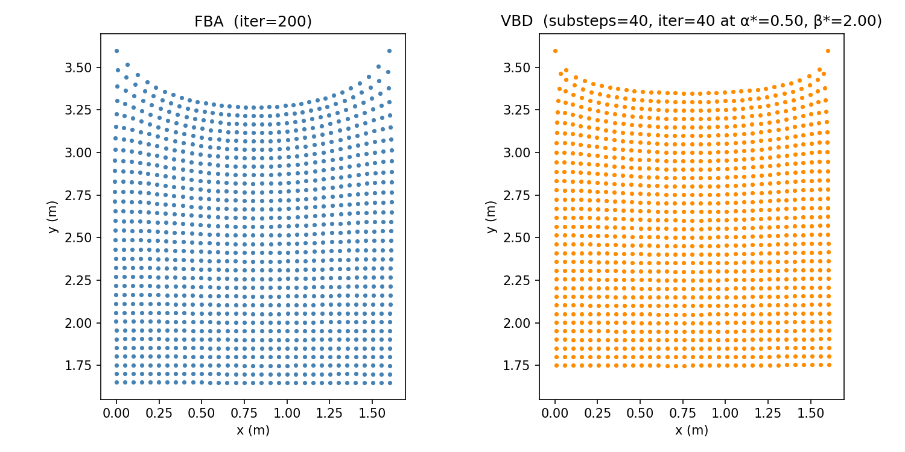
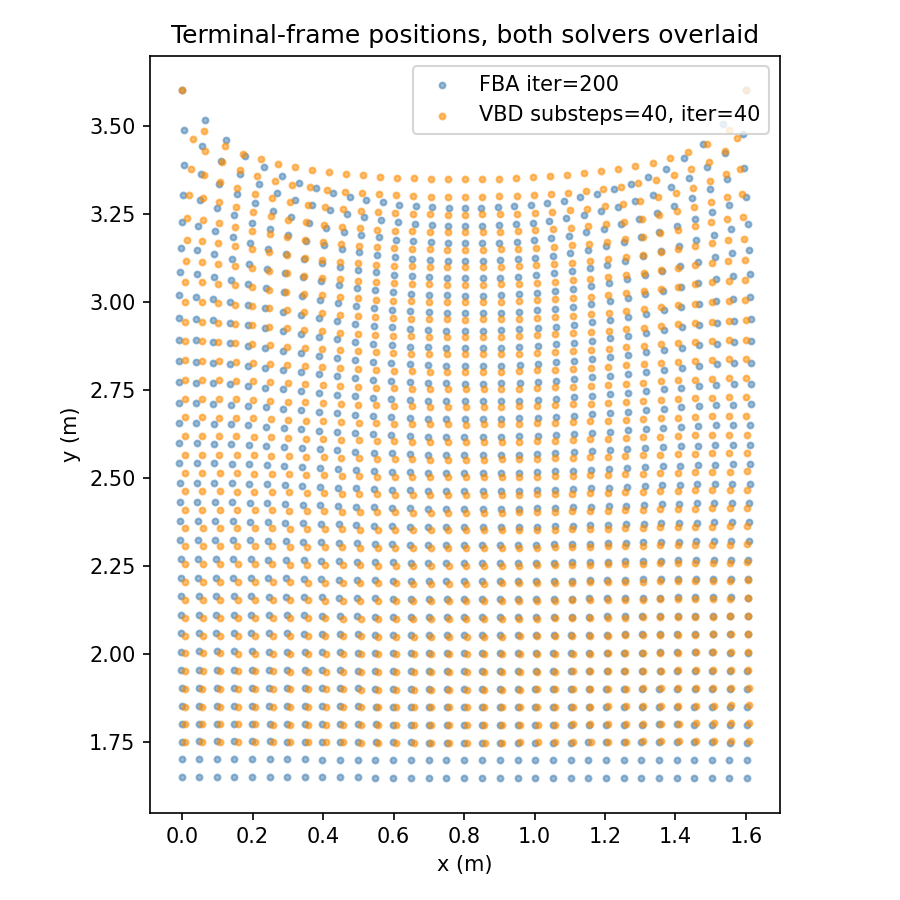
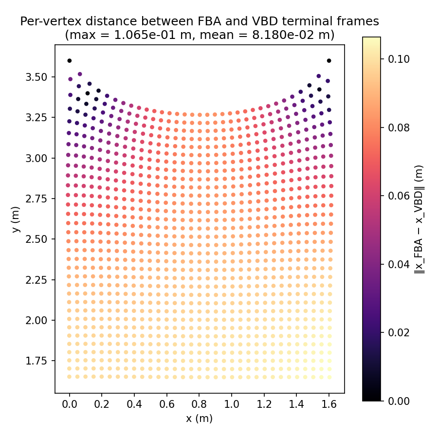

![Calibration loss surface. Colour encodes terminal RMS (m) between VBD at candidate budget and x_FBA_ref[-1]. Star marks (α*, β*).](calibration.png)
Generated 2026-05-21
Scene: 32×32 hanging cloth, cell size 0.05 m (rest configuration 1.6×1.6 m), Y-up gravity, two top corners pinned (particle_mass = 0), all other particles mass 0.1 kg. Constitutive model: Stable Neo-Hookean (Smith 2018), μ = λ = 10 000 Pa. Edge springs: edge_ke = 1.0. Time integration: implicit Euler, dt = 1/100 s, 800 frames (8 s total).
| Parameter | Value |
|---|---|
| n_frames | 800 |
| iterations (FBA anchor) | 200 |
| mu | 10000 |
| lam | 10000 |
| edge_ke | 1.0 |
| frame_dt (s) | 0.0100 |
| max_sag (m) | 0.35049 |
| mean ms/frame (anchor) | 148.217 |
FBA is run with iter = 200 for 800 frames, producing the trajectory
x_FBA_ref (800 frames × 1 089 particles × 3).
A 1-D grid search over α (scaling tri_ke in VBD) minimises the RMS distance
between VBD's terminal shape at moderate budget and x_FBA_ref[-1].
If the 1-D minimum exceeds 0.5 % × max_sag, the search is extended to a 2-D
grid over (α, β) where β scales edge_ke.
| Parameter | Value |
|---|---|
| α* (tri_ke scale) | 0.5000 |
| β* (edge_ke scale) | 2.0000 |
| 2D search triggered | True |
| Candidate substeps | 10 |
| Candidate iterations | 10 |
| Verify substeps | 40 |
| Verify iterations | 40 |
| Floor RMS (high-fid VBD vs FBA anchor, m) | 8.422804e-02 |
| Floor threshold (frac of max_sag) | 0.0050 |
| max_sag (m) | 0.350489 |
VBD is run at calibrated (α*, β*) with substeps = 40, iter = 40 for 800
frames → x_VBD_ref. Timing below.
| Parameter | Value |
|---|---|
| substeps | 40 |
| iterations | 40 |
| α* | 0.5000 |
| β* | 2.0000 |
| n_frames | 800 |
| elapsed_s | 143.68 |
| mean ms/frame | 179.538 |
Four FBA configs (iter ∈ (5, 10, 20, 40)) and four VBD configs ((substeps, iter) ∈ ((2, 10), (5, 10), (10, 10), (10, 20))) are each run at calibrated (α*, β*) for 800 frames. Per-frame wall-clock time and per-frame RMS error against both references are recorded.
Each solver is compared against its own high-iteration reference: FBA sweep
configs versus x_FBA_ref (iter=200); VBD sweep configs versus
x_VBD_ref (substeps=40, iter=40 at α*=0.50,
β*=2.00). Relative error = per-frame RMS divided by max_sag of the
FBA anchor (0.3505 m).
| Config | mean ms/frame | terminal rel_err |
|---|---|---|
| FBA iter=5 | 3.419 | 1.8714e-04 |
| FBA iter=10 | 6.835 | 8.8995e-06 |
| FBA iter=20 | 13.557 | 2.0509e-06 |
| FBA iter=40 | 27.021 | 2.4476e-06 |
| VBD 2x10 | 2.440 | 3.7428e-01 |
| VBD 5x10 | 6.057 | 4.3466e-02 |
| VBD 10x10 | 12.005 | 1.0468e-02 |
| VBD 10x20 | 23.306 | 1.0306e-02 |


Per-vertex terminal-frame residual, each solver vs its own converged reference (best-budget sweep config for each solver).


Terminal-frame particle positions (x–y plane) at each solver's high-iteration reference run.



RMS distance between FBA and VBD terminal frames: 0.0842 m. Max sag of FBA anchor: 0.3505 m.
For completeness, every sweep config is also compared against the FBA
reference (x_FBA_ref), i.e. not the self-convergence view from
Section 3.
| Config | mean ms/frame | p50 ms | p95 ms | terminal RMS vs FBA ref (m) | rel_err |
|---|---|---|---|---|---|
| FBA iter=5 | 3.419 | 3.289 | 3.990 | 6.5589e-05 | 1.8714e-04 |
| FBA iter=10 | 6.835 | 6.786 | 7.895 | 3.1192e-06 | 8.8995e-06 |
| FBA iter=20 | 13.557 | 13.635 | 15.099 | 7.1881e-07 | 2.0509e-06 |
| FBA iter=40 | 27.021 | 27.166 | 29.820 | 8.5785e-07 | 2.4476e-06 |
| VBD 2x10 | 2.440 | 2.414 | 2.506 | 1.0778e-01 | 3.7428e-01 |
| VBD 5x10 | 6.057 | 6.030 | 6.236 | 6.9382e-02 | 4.3466e-02 |
| VBD 10x10 | 12.005 | 11.981 | 12.252 | 8.0708e-02 | 1.0468e-02 |
| VBD 10x20 | 23.306 | 23.286 | 23.570 | 8.0762e-02 | 1.0306e-02 |


three_up.mp4 — side-by-side video: FBA-best | VBD-best | reference (FBA iter=200) over 8 s. 50 fps × 800 frames.
{
"n_frames": 800,
"n_warmup": 10,
"iterations": 200,
"mu": 10000.0,
"lam": 10000.0,
"edge_ke": 1.0,
"frame_dt": 0.01,
"elapsed_s": 118.86892490500031,
"mean_ms_per_frame": 148.21680829368637,
"terminal_min_y": 1.6485298871994019,
"initial_min_y": 1.9990190267562866,
"max_sag": 0.35048913955688477,
"fba_timing_summary": {
"local_ms": 0.6587703729906934,
"linear_solve_ms": 0.6511336273026245,
"schur_ms": null,
"nsn_inner_ms": null,
"n_samples": 10000
},
"ref_path": "/home/ziqiu/work/newton/scripts/fba_vs_vbd_bench_out/x_FBA_ref.npy"
}
{
"n_frames": 800,
"n_warmup": 10,
"substeps": 40,
"iterations": 40,
"alpha_star": 0.5,
"beta_star": 2.0,
"elapsed_s": 143.67619640600606,
"mean_ms_per_frame": 179.53827181150194,
"ref_path": "/home/ziqiu/work/newton/scripts/fba_vs_vbd_bench_out/x_VBD_ref.npy"
}